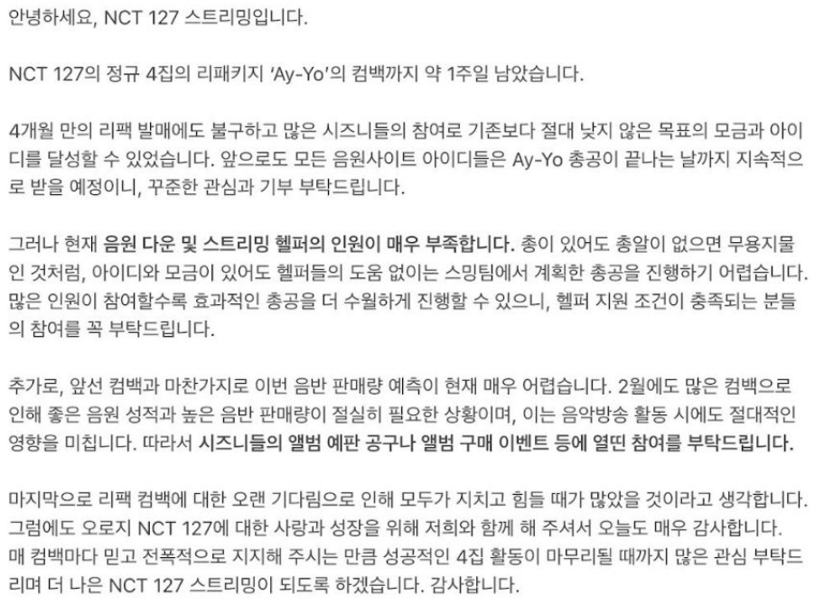

1. 계정관련
- NCT 127 스트리밍팀 트위터
- ID: PW:
- 계정팀 구글 계정
- ID: PW:
2. 응답 관련 (자주 들어오는 질문은 기타사항을 통해 확인 가능)
- 안녕하세요, NCT 127 스트리밍팀입니다. (응답 내용) 감사합니다.
3. 양식 및 업로드 관련
- 눈길을 끌 수 있는 글
-
예시: RT) D-1 《Ay-Yo》 아이디 모집 상황
💙지니 125%
🧡벅스 61%
💜바이브 84%
💛카카오 57%
컴백까지 하루 남았습니다🔥
벅스 바이브 카카오 아이디 더 기부할 수 있는
시즈니들은 내일까지 열심히 기부해주세요💞
👇🏻해시태그를 통해 ID기부 인증 릴레이
#아이디_기부_알유레디
- 진지하고 형식적인 글
-
예시:

- 공지글, 가이드 등의 업로드 일정은 당일 팀장 공지, 업로드 가능한 시간에 순차적으로 팀원들 업로드